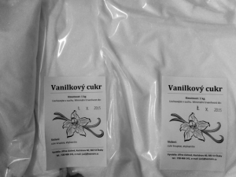

Poctivé potravinárske zmesi z Vysočiny — zemiakové cestá, pudingy, vanilínový cukor a kakao. Z múky ocenenej českou značkou kvality KLASA, bez kompromisov v kvalite.
Ochutnajte zadarmoNaše produktyChlpaté knedle máte hotové za 15 minút — a chuťou ich nerozoznáte od knedieľ pripravovaných celé popoludnie.
Ozvite sa — radi vám pripravíme vzorku zadarmo. Tovar si vyzdvihnete v Kochánove či Humpolci, alebo vám ho privezieme až domov.
Napíšte si o vzorkuČo vyrábame
Päť zmesí, ktoré od roku 2004 dodávame domácnostiam, reštauráciám, jedálňam aj cukrárňam v Čechách i na Morave.

Náš najvyhľadávanejší výrobok. Klasické knedle, šúľance, krokety aj gnocchi z jedného cesta.
5 kg / 165 Kč

Bosáky podľa tradičnej receptúry. Hotové za 15 minút, chuťou na nerozoznanie od domácich.
5 kg / 185 Kč

Kukuričný škrob bez lepku, prirodzená vanilková chuť. Na dezerty aj pečenie.
1 kg / 34 Kč · 400 g / 17 Kč

Tmavé cukrárske kakao s 21 % tuku. Výrazná farba aj chuť múčnikov a koktailov.
500 g / 100 Kč

Jemne mletý cukor s vanilínovou arómou. Do cesta aj na posypanie pečiva.
1 kg / 38 Kč
Rodinná výroba
Pšeničná múka ocenená českou značkou kvality KLASA pochádza z mlyna v Havlíčkovom Brode, 12 km od našej dielne. Kukuričný škrob v pudingoch neobsahuje lepok.
Chlpaté knedle máte hotové za 15 minút — a chuťou ich nerozoznáte od knedieľ pripravovaných celé popoludnie.
Vyrábame kvalitu za cenu nižšiu než „supermarketové" výrobky neistého pôvodu. Zemiakové knedle: 5 kg za 165 Kč.
Inšpirácia do kuchyne
Osvedčené recepty, ktoré z našich zmesí pripravíte rýchlo a bez práce navyše.

Tradičná sladká večera zo zemiakového cesta: šúľance obalené v maku s cukrom, preliate rozpusteným maslom.

Koláč, ktorého prípravu si užijú aj deti. Pečenie baví dvakrát — pri príprave aj pri ochutnávaní.

Slovenská klasika z chlpatých knedieľ v prášku — halušky s kyslou kapustou a vypečenou slaninou.

Radi by ste pohostili návštevu, ale nie ste práve Jamie Oliver? Nepečené bebe rezy zvládne naozaj každý.

Ľahký múčnik za pol hodiny: kontrast horkastého kakaa a jemne sladkej šľahačky. Bez múky, teda aj bez lepku.

Hrnčekový perník, ktorý si zamilujete pre jednoduchú prípravu aj výbornú chuť. Nepotrebujete váhu — vystačíte si s hrnčekom.

Leto je tu a s ním aj dozrievanie jahôd. Jednoduchý a rýchly recept, ktorým za 20 minút potešíte aj najväčších maškrtníkov.
Ozvite sa — radi vám pripravíme vzorku zadarmo. Tovar si vyzdvihnete v Kochánove či Humpolci, alebo vám ho privezieme až domov.
Napíšte si o vzorku